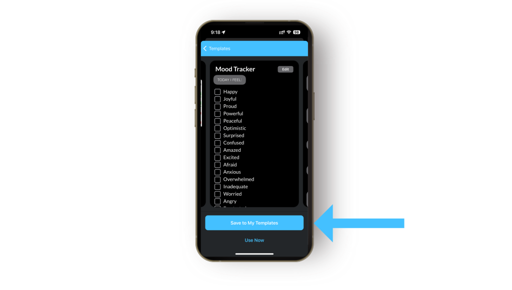

JOURNALING TIPS
Keeping tabs of your daily moods and feelings is a great way to improve self-awareness, take
stock of patterns, and better understand the goings on of your inner mind. There are plenty of
ways to do this in the Day One app—if you’re just getting started, you can take advantage of
our existing templates and go from there!
In this article, we’ll walk you through setting up and customizing a mood tracker within the Day
One app, including setting up reminders to keep your practice, and more helpful tips.
Let’s get going.
You can also select a time to be reminded to complete your entry—you’ll get a notification,
which can help you create and maintain a habit.
You can also choose “use now” to get started with your first mood tracker entry right now!

How are you feeling today? The template comes with a whole lot of emotions to choose from
—but you can also add your own, if these don’t cut it.
The template includes guided prompts to help you explore your current mood, like “What
might have triggered this mood?” and “How am I responding to my mood?” Answering these
questions can help you understand how you respond to certain situations and to gather ideas
for actions you can take.
Schedule a mood check-in any time you like. Using journaling notifications, you can pair a
custom message like, “How am I feeling right now?” to your mood tracker template. Simply tap
the notification to check in on how you’re feeling.
The Day One journaling app makes it easy to build and maintain a daily journaling habit. Daily
journaling reminders, daily writing prompts, and journal streaks are designed to help keep you
motivated and consistently journaling.